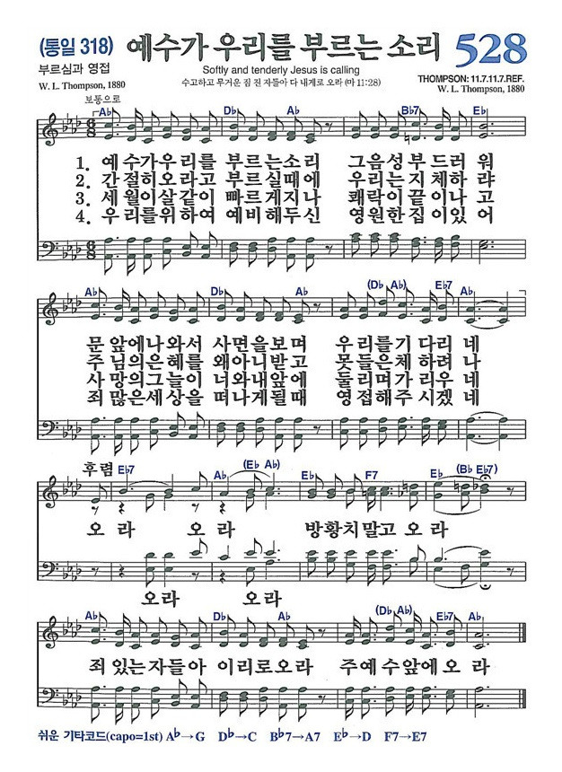

자격이 아니라 은혜로 채워지는 자리.
내 왕국(My Kingdom)을 내려놓고 참된 쉼과 기쁨의 식탁에 앉으십시오.

예루살렘을 향하는 길, 무리에서 제자로 부르시며 영적 기준을 세우십니다.
영에는 중립지대가 없습니다. 세상을 하나님의 관점으로 보는 '영적 시력'을 교정받아야 합니다.
#주인바꾸기 #요나의표적제자는 '무엇을 먹을까'하는 생존의 공포를 넘어 하나님께 부요한 자가 되어 사명의 삶으로 나아갑니다.
#어리석은부자 #코람데오"금년에도 그대로 두소서." 은혜의 유예 기간이 영원하지 않음을 깨닫는 것이 제자의 긴박감입니다. 열매 없음을 회개하고 좁은 문으로 힘써 들어갑니다.
#무화과나무 #긴박성인간 존재가 근원적으로 갈망하는 기쁨과 관계의 회복이 있는 곳입니다.
"가난한 자들과 몸 불편한 자들을 청하라."
세상처럼 내가 준 만큼 돌려줄 사람을 초대하는 계산과 거래의 자리가 아닙니다. 세상의 영향력이 사라질 때 비로소 하나님이 공급하시는 조건 없는 생명이 회복됩니다.
"두렵건대 그 사람들이 너를 도로 청하여 네게 갚음이 될까 하노라" (눅 14:12)
나를 증명하기 위해, 인정받기 위해 끊임없이 애쓰는 세상의 보상 구조와 다릅니다. 이 잔치에서는 보상을 하나님이 해주십니다. 그래서 주님이 차려 놓은 식탁 앞에 그저 앉기만 하면 되는, 참된 쉼과 안식이 있습니다.
"이는 의인들의 부활시에 네가 갚음을 받겠음이라" (눅 14:14)
"강권하여 데려다가 내 집을 채우라."
능력 있는 사람들의 사교장이 아닙니다. 스스로 자격이 없다고 생각하는 가난한 심령들, 은혜가 필요한 사람들이 모이는 곳입니다. 잔치집은 은혜의 순환으로 가득 찹니다.
"사람을 강권하여 데려다가 내 집을 채우라" (눅 14:23)
"나는 밭을 샀으매...", "소 다섯 겨리를 샀으매...", "장가 들었으니..."
모두 '나의 왕국(My Kingdom)'을 돌보는 일이었습니다.
영향력이 나타나지 않는 잔치, 내가 주인공이 되지 못할 것 같은 자리를 일상을 핑계로 거절하고 세상의 욕망을 놓지 못해 참된 쉼을 놓쳤습니다.
예수님의 십자가로 이미 시작된 이 천국 잔치에 동참합시다.
여전히 바쁘게 자기 왕국을 돌보고 계십니까? 잠시 내려놓고 여러분을 위해 차려 놓은 은혜의 식탁, 감사와 환영이 있는 그 자리에 믿음으로 앉으십시오.
잔치는 혼자 즐기는 것이 아닙니다. 이 풍성함을 먼저 맛본 제자로서, 길가에 서 있는 지친 이들을 향해 나아가는 '행복한 배달부'가 되십시오.
우리는 이미 하늘 잔치에 초대받은 사람들입니다. 억지 신앙, 피로와 불안에 쫓기는 삶이 아니라 세상이 줄 수 없는 구원의 기쁨이 흘러야 합니다.